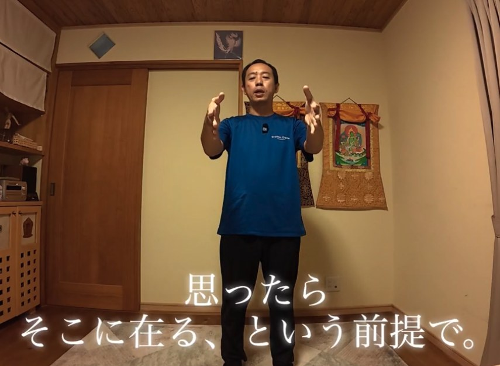
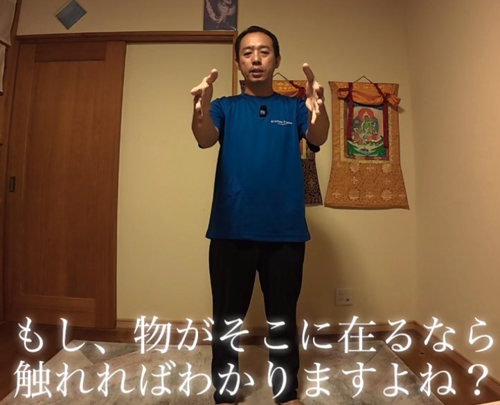
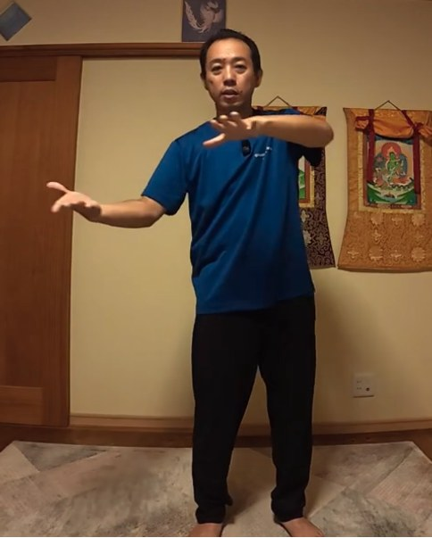
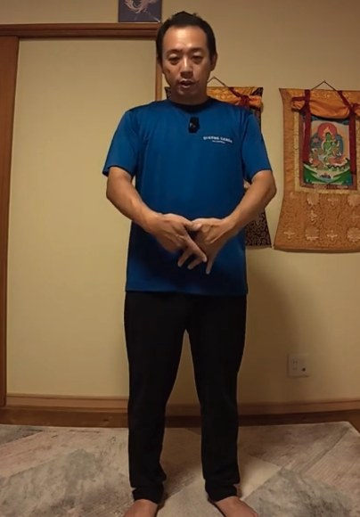
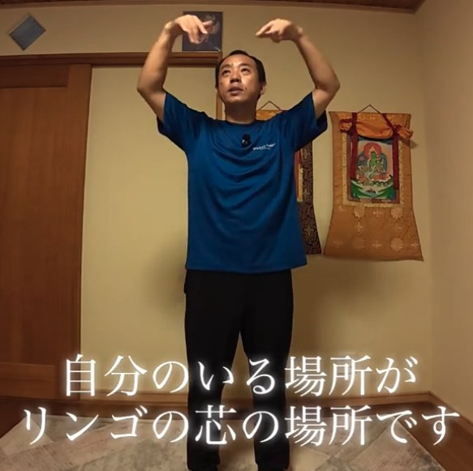
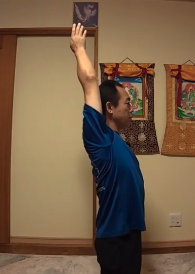
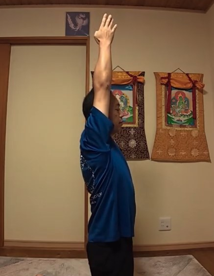
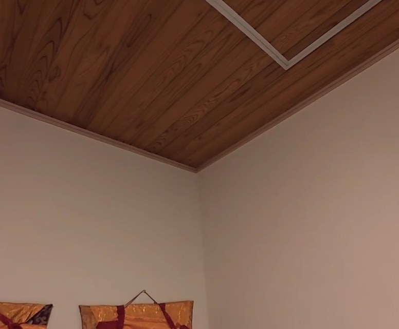
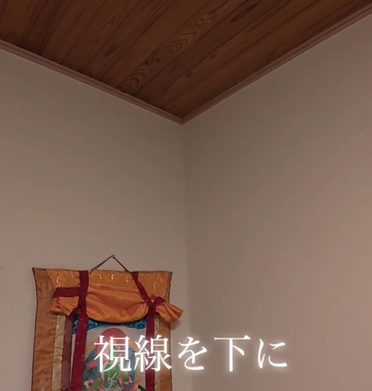

氣功ビデオ講座 9月号
思えば、氣は動く。意念と氣の法則と氣感
氣功でいちばん大切なのは、意念。
氣を感じる、氣を動かす練習を、動画でていねいに学びます。
- 形式動画講座
- 収録時間約31分
- 準備立てるスペース
前回までの講座： 3月号（立ち方） ／ 4月号（補と瀉） ／ 5月号（補と瀉 応用編） ／ 6月号（体内のルート作り） ／ 7月号（中脈とトーラス） ／ 8月号（天地を繋ぐ その3）

こんなこと、ありませんか？
- 氣を感じにくい、と思っている
- 逆に、感じすぎて疲れてしまうことがある
- 「氣が動くって、どういうこと？」を知りたい
- 氣を動かす練習を、はじめから見直したい
氣は、疑わず、操作せず、ただ感じるもの。感じ方には個人差があります。ご自分の感覚を、大事にしてください。
9月号の考え方
氣功でいちばん大切なのは、
「意念」
氣は、体の動きで動かすのではなく、思って動かすものです。昔から、意識したところに氣が動く、という考え方があります。
「あるかも」ではなく、「ある」。意念をした、その瞬間に、氣はそこに動いている。そう捉えて、あとは、疑わず、操作せず、ただ感じます。
今回は、その意念で、氣を感じる、氣を動かす練習です。氣のボールから、トーラス、部屋のワークまで、実演しながら学びます。
この講座で学ぶこと
6つのステップで、
氣を感じる・動かす練習をします
-
1
「ある」ものとして、氣のボールを感じる
手の間に氣のボールがあると思った瞬間に、氣は動いています。「あるかな」ではなく「ある」ものとして手を持っていき、その感触をただ感じます。それ以上のことは、しません。

「ある」ものとして、手を前に出す -
2
氣の流れを、予測せずに感じる
遠くから氣が流れてくると思い、手を出します。「こう流れるはずだ」と予測を立てず、風のような感じ、腕が重くなる感じなど、いろいろな体の感じを、ただ感じます。

氣の流れに、手を出して感じる -
3
部屋の氣を、丹田に集めて感じる
おへその3cmほど下の丹田に、部屋全体の氣が集まったと思います。目を閉じて、丹田だけでなく、腕、背中、足の裏、頭の上など、体のいろいろな場所の反応も感じてみます。

丹田に氣が集まっていると思い、感じる -
4
トーラス状に、氣を通す
リンゴとその芯をイメージして、自分を中心に、360度ぐるぐると氣が循環しているとします。イメージどおりの感覚でなくて構いません。純粋な気持ちで、全身、五感で感じていきます。

自分のいる場所が、リンゴの芯 -
5
手を当てて、感じる。動きを見比べる
体の気になる場所に手を当てて、操作せず、ただ感じます。動画では、肩の動きを例に、前と後の動きを見比べています。感じ方、変わり方には個人差があります。

前 
後 -
6
部屋の四隅の上を、意識する
氣功では、部屋の四隅の上に邪氣が集まるとされています。角を見て、「この部屋の氣がきれいになる」と思い、自分の体の感覚を感じながら、視線を角に沿って下ろしていきます。

部屋の四隅の上 
視線を下に
この講座の特長
「意念」を、動画で確かめる
「感じる」ことから、見直せる
氣を感じにくい方も、感じすぎる方も。疑わず、操作せず、ただ感じる、という基本を学べます。
全身、五感で感じる練習
手だけでなく、丹田、背中、足の裏、頭の上まで。体のいろいろな場所で、氣を感じる方法を実演します。
日常で、ひとりで続けられる
氣のボール、トーラス、部屋のワーク。特別な道具はいりません。日々の練習に取り入れやすい内容です。
言葉で言うより、やるのが難しい。
だから、動画で何度も確かめる。
講師
神田 一郎（かんだ いちろう）
富士山のふもとで、氣功を教えています。リハビリの現場での経験と、ご自身の体と向き合ってきた歩みを土台に、「なんでもOK、オールOK」の気持ちで、無理なく続けられる氣功をお伝えしています。
この講座でも、うまくできているかどうかを気にするより、まずは自分の体の小さな変化に気づくことを大切にしています。
講座の概要
- 講座名
- 氣功ビデオ講座 9月号「意念と氣の法則と氣感」
- 形式
- 動画講座（講師が実演しながら解説）
- 収録時間
- 約31分
- 内容
- 意念とは／氣のボールを感じる／氣の流れを感じる／部屋の氣を丹田に集める／トーラス状に氣を通す／手を当てて感じる／部屋の四隅の上を意識するワーク
- 準備するもの
- 動画を見ながら立てる広さ
- 価格
- 8,800円（税込）
- 視聴方法
- Vimeo（お支払い完了後、いつでもご視聴いただけます）
- お支払い
- PayPal
氣功ビデオ講座シリーズ
段階を踏んで、少しずつ深めていく
月ごとに、内容がつながっていくシリーズです。9月号は、氣を感じる・動かす回です。
よくあるご質問
3月号〜8月号を見ていなくても受講できますか？
受講できます。ただ、9月号は、これまでの立ち方や補と瀉、天地を繋ぐ動きの上に、氣を感じる・動かす練習を重ねていく内容です。質を高めたい方は、3月号、4月号、5月号、6月号、7月号、8月号から順にご覧いただくのがおすすめです。
氣功が初めてでも大丈夫ですか？
はい。ただ、シリーズの途中の内容にあたるため、初めての方は3月号から始めるのがおすすめです。
準備するものはありますか？
動画を見ながら立てるスペースがあれば大丈夫です。
購入後は、どうやって視聴しますか？
お支払い完了後、いつでもVimeoでご視聴いただけます。
どんな効果がありますか？
体の感じ方には個人差があります。この講座は、体の使い方を学ぶ内容であり、医療行為や、病気の診断・治療を目的としたものではありません。体調に不安がある方は、無理をせず、医師にご相談ください。